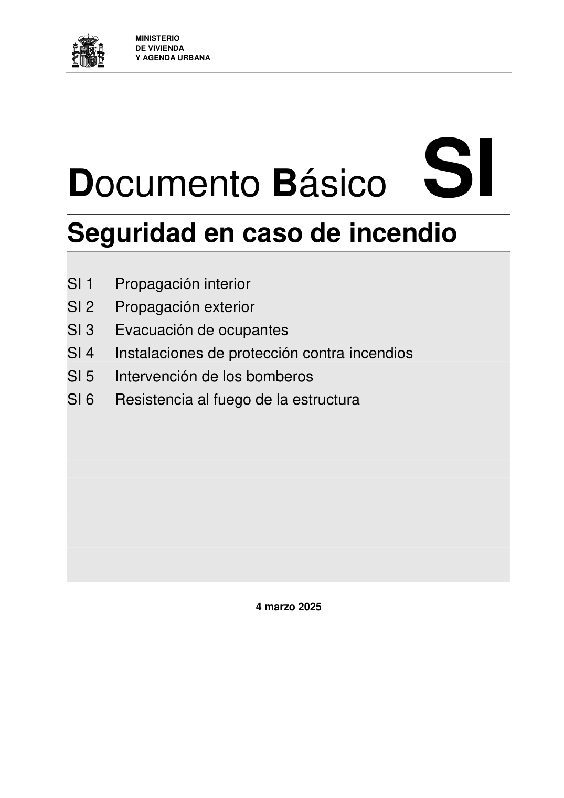

DB-SI Seguridad en caso de incendio · edición 2025-03-04 · capa oficial
Documento DB-SI-oficial · SHA-256 del PDF 0a2e78cd62471d9cc5cfe2efbc6aa39fdbad73c124aea7b039f9de96c141e105
Página física 1 de 92.
Copia fiel del PDF fuente · Fuente oficial
Ficha de la disposición en la fuente oficial
Formato: Texto de la página (Markdown)
MINISTERIO DE VIVIENDA Y AGENDA URBANA Documento Básico SI Seguridad en caso de incendio SI 1 Propagación interior SI 2 Propagación exterior SI 3 Evacuación de ocupantes SI 4 Instalaciones de protección contra incendios SI 5 Intervención de los bomberos SI 6 Resistencia al fuego de la estructura 4 marzo 2025
